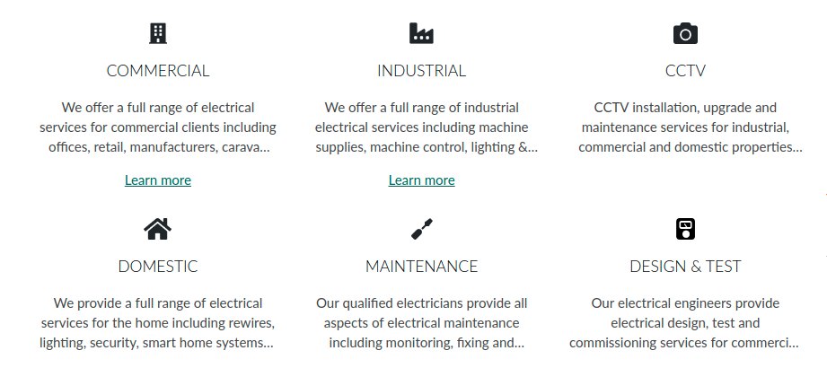
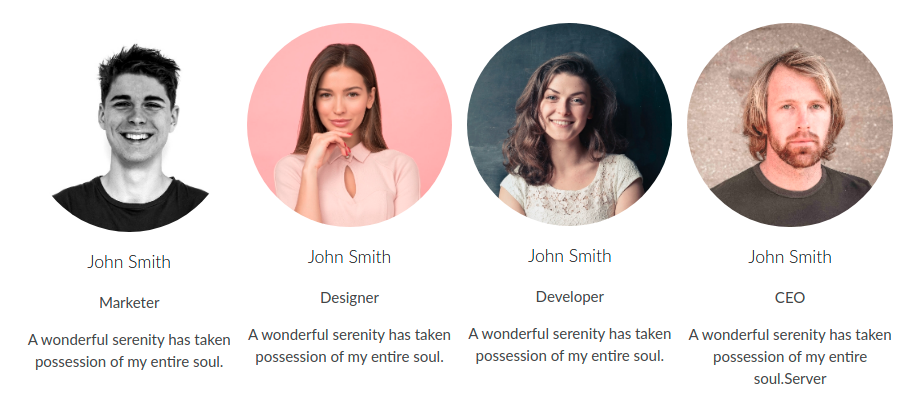
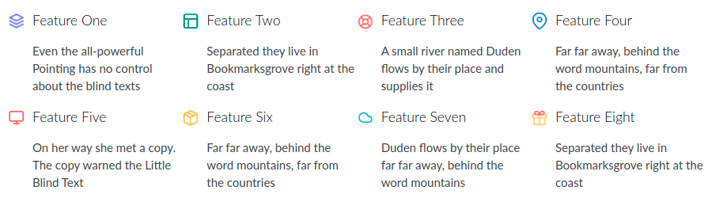
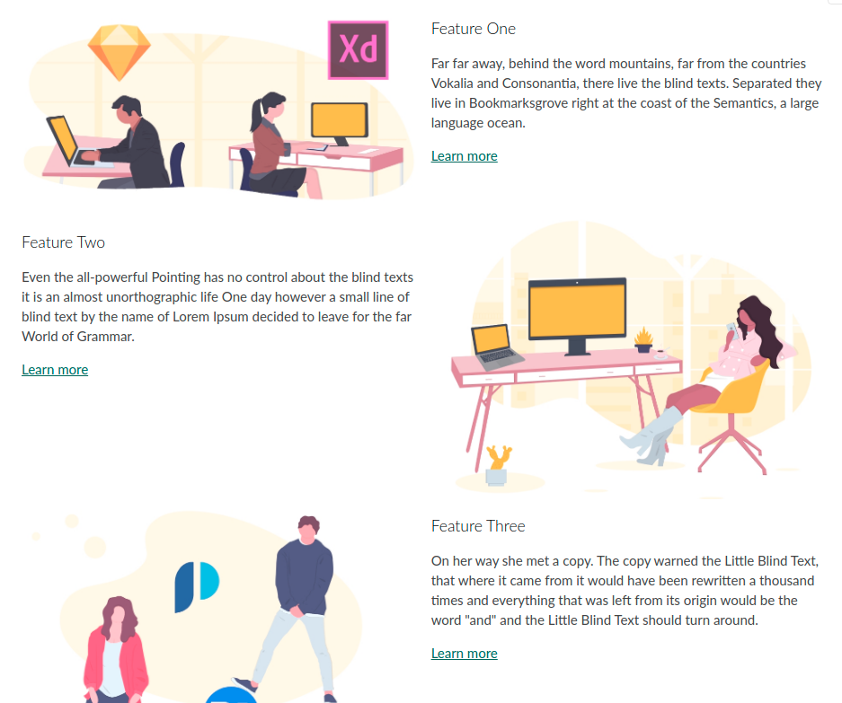
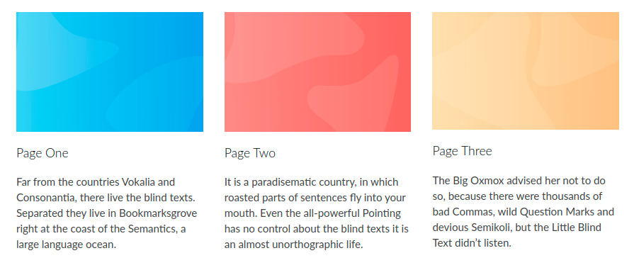

Content blocks allow you to put the CMS back into page layouts.
When a developer adds a rec_block() function into a Twig layout file, this renders an editor for it into the edit page view for the developer or site admins to use.
e.g. Say you want to have an editable title & text area with an image to the side. In the layout you might do something like:
<div class="pure-g">
<div class="pure-u-1 pure-u-md-1-2">
{{ rec_block("Title area", unique=true, type="html") }}
</div>
<div class="pure-u-1 pure-u-md-1-2">
{{ rec_block("Title side image", unique=true, type="image") }}
</div>
</div>
Types of content blocks available:
Content blocks can render in many different types, here's a run down of what we have available.
text
Textarea inputs for medium length text entry.
The text type is the default for content blocks if you don't pass another type.
{{ rec_block("Name", type="text") }}
html
Allows entry of HTML by use of a wysiwyg editor.
{{ rec_block("Name", type="html") }}
image
Image uploader with advanced options available for alt text, link & an optional small screen version of the image for mobile to allow switching the image for small screens (e.g. if the large image contains small text you may want an image without the text or different sized text to show instead).
{{ rec_block("Name", type="image") }}
<img src="/uploaded/path/here">
<a href="/some/link">
<picture>
<source srcset="/uploaded/path/here" media="(max-width: 48em)">
<img src="/uploaded/path/here" alt="image alt text">
</picture>
</a>
New See the recipes below for an example combining the image block type with the repeatable=true option to create an image carousel.
background-image
Image uploader but specifically for use with background images such as the background of a hero unit.
{{ rec_block("Name", type="background-image") }}
url('/uploaded/path/here')
map
This is a input for adding an address and on the front end we'll pass that address to Google Maps to render an interactive map.
As it returns an iframe we can utilise the "iframe-container" class to make it responsive and set an aspect ratio. (Available default aspect ratios: 5-1, 4-1, 3-1, 2-1, 3-2, 4-3, 1-1, but you can add more with css by varying the padding-bottom. You can also add -sm, -md, -lg or -xl to each class have different sizes kick in at different breakpoints, e.g. "iframe-container iframe-container-2-1 iframe-container-4-1-md")
<div class="iframe-container iframe-container-3-1">
{{ rec_block("Name", type="map") }}
</div>
<div class="iframe-container iframe-container-3-1">
<iframe
width="450"
height="250"
frameborder="0" style="border:0"
src="https://www.google.com/maps/embed/v1/search?key=xxxxx&q=123+Fake+Street,+Worcester,+WR12AB"
allowfullscreen>
</iframe>
</div>
youtube
This is a url input for adding a YouTube link and on the front end we'll embed the player for you.
As it returns an iframe we can utilise the "iframe-container" class to make it responsive and set an aspect ratio. (Available default aspect ratios: 5-1, 4-1, 3-1, 2-1, 3-2, 4-3, 1-1, but you can add more with css by varying the padding-bottom. You can also add -sm, -md, -lg or -xl to each class have different sizes kick in at different breakpoints, e.g. "iframe-container iframe-container-2-1 iframe-container-4-1-md")
<div class="iframe-container iframe-container-3-1">
{{ rec_block("Name", type="youtube") }}
</div>
<div class="iframe-container iframe-container-3-1">
<iframe
width="560"
height="315"
src="https://www.youtube-nocookie.com/embed/RE87rQkXdNw"
frameborder="0"
allowfullscreen>
</iframe>
</div>
page-url
Offers a dropdown of pages in page manager to select a page as an alternative to entering a url.
{{ rec_block("Name", type="page-url") }}
small-text
Similar to the text field but offers a smaller single line text input.
{{ rec_block("Name", type="small-text") }}
link
A quick way to insert a link with a single line text and url input.
{{ rec_block("Name", type="link") }}
<a href="/some/link">
Text entered
</a>
feature
Feature blocks are something a bit special with fields for uploading an image, title, text, with advanced options for link and link text all together.
We noticed a common pattern for building sites using content blocks & modules involves some combination of an image, text, title and optional link. In fact all those fields are optional so you can use an combination together.
This becomes especially powerful when combined with the repeatable=true option to form simpler versions of modules for the site without any setup.
{{ rec_block("Name", type="feature") }}
<section class="cb-feature">
<div class="cb-feature__image">
<img src="/uploaded/path/here">
</div>
<header class="cb-feature__title">
<h3>Title here</h3>
</header>
<p class="cb-feature__text">
<img src="/uploaded/path/here">
</p>
<footer class="cb-feature__link">
<a href="/link/path">Learn more</a>
</footer>
</a>
Each of those 4 elements inside the section are optional based on if the field is entered in admin. Also if a link_text is set but no link, the footer will change from a link to just the link text and it's class will adapt.
A sort of hidden feature of the elements inside this block type is that we auto define them for you as CSS grid-areas. This means you can quickly use CSS grid to lay them out with the names image, title, text, link and link_text if no link given. You'll see this in use in the recipes.
Learn more about CSS Grid template areas here.
New See the recipes below for many examples of the feature block type with repeatables.
model
Model blocks allow you to add 3D Models (with Augmented Reality) to a page.
{{ rec_block('3D Model', type="model") }}
When viewing the block in Page Manager/Content Block Manager it will then ask for a .glb or .gltf file (for the basic 3D Model and AR on Android) and a .usdz file (for AR support on iPhones/iOS 12+).
Options for content blocks:
Option modifiers let you customise the content block. Options for making a block unique for each page it's on, or allowing them to store multiple values with repeatables. Here's a full list of what's available:
name string
Name is the first & only required argument/option passed to rec_block().
The name is how you'll reference this block in admin and if you want to re-use it
{{ rec_block("Name goes here") }}
type string
The type defines how the block will be edited in the admin and rendered on the front end.
If you don't set a type it will default to text. A full list of types is available above.
{{ rec_block("Name", type="type goes here") }}
unique boolean
By default, a block is only unqiue based on it's name being unique. That means if a block with the same name is shown on multiple pages it will have the same content.
The unique=true option let's you have the same named block on multiple pages but it will make sure it's content is unique for each page.
{{ rec_block("Name", unique=true) }}
template boolean
Using a test or editor type block and want to use system template tags or use twig functions inside? Passing template=true let's you do this.
{{ rec_block("Name", template=true) }}
repeatable boolean
Repeatables let you save multiple versions on any block type. Multiple images, a list of multiple text lines or multiple feature blocks.
Making a new navigation, an image carousel, or multiple of any other block type is as easy as adding repeatable=true.
Repeatables render add & remove buttons in admin as well as are drag and drop sortable. On the front end they render in <ul> elements with each item in a <li>.
{{ rec_block("Name", repeatable=true) }}
<ul>
<li>
First
</li>
<li>
Second
</li>
<li>
Third
</li>
</ul>
listClass string
When using repeatables you can pass listClass as a string of space separated class names to add to the <ul> element.
You can use this to add classes to style with, or for javascript use like owl-carousel, see owl example below
{{ rec_block("Name", repeatable=true, listClass="your-class-name another-class") }}
asArray boolean
Allows you to debug the data saved easier & allows for more custom data transformations, e.g. taking a block type and building custom html for it.
{{ rec_block("Name", asArray=true) }}
Extras:
Here we'll have a few extra notes around content blocks that can be useful for more advanced designs and use cases.
Isset checks
You may run into cases where you need to check if a block has been filled out, maybe it's something optional for admins to enter? The isset check allows for this, it accepts a name & optionally the unique=true option.
This can also be useful to make sure you only wrap a block with a div for example if it's been filled out, e.g.
{% if rec_block_isset('xyz') %}
<div class="my-xyz-wrapper">
{{ rec_block('xyz', type="image") }}
</div>
{% endif %}
Recipes to get started faster:
These recipes are a bunch of pre-made examples to drop into any site and customise as freely.
In the following recipes with screenshots we have browser tested these in all modern browsers such as Google Chrome, Firefox, Safari, Opera, Edge, IE11 & even support older versions as far back as IE9.
Several utilise layouts with CSS Grid & Flexbox both with great modern browser support and simple fallbacks in place.
Text with image right
A simple example showing 2 content blocks to make up some text with an image to the side.
You can see later in these recipes that the feature type may often be a better fit for designs like this, but this is a useful example to know
<div class="pure-g">
<div class="pure-u-1 pure-u-md-1-2">
{{ rec_block("Title area", unique=true, type="html") }}
</div>
<div class="pure-u-1 pure-u-md-1-2">
{{ rec_block("Title side image", unique=true, type="image") }}
</div>
</div>
Owl carousel
A simple example showing 2 content blocks to make up some text with an image to the side.
You can see later in these recipes that the feature type may often be a better fit for designs like this, but this is a useful example to know
{{ rec_block('Image carousel', type="image", repeatable=true, listClass="plain-list owl-carousel owl-theme my-image-carousel") }}
<script>
jQuery('.my-image-carousel').owlCarousel({
loop: true,
margin: 10,
autoHeight: true,
responsive:{
0: { items: 1 },
500: { items: 2 },
1000: { items: 3 }
}
});
</script>
Sub nav
Create a quick sub nav for pages with the following content block.
{{ rec_block('Sub nav', type="link", repeatable=true, unique=true) }}
<ul>
<li>
<a href="/link/path">Text 1</a>
</li>
<li>
<a href="/another/link">Text 2</a>
</li>
</ul>
Services
Show off services a company offers.

{{ rec_block('Services', type="feature", repeatable=true, unique=true, listClass="plain-list services-list") }}
.services-list {
text-align: center;
}
.services-list .cb-feature__image img {
max-height: 24px;
margin: 0 auto;
}
.services-list .cb-feature {
margin: 1em;
}
.services-list .cb-feature__text {
margin-top: 0;
/* cut at 3 lines */
display: -webkit-box;
-webkit-line-clamp: 3;
-webkit-box-orient: vertical;
overflow: hidden;
}
.services-list .cb-feature__title h3 {
margin: 1em;
}
/* split to columns at breakpoints */
@media screen and (min-width: 35.5em) {
/* we'll use flex to handle columns */
.services-list,
.services-list > li,
.services-list .cb-feature {
display: flex;
}
.no-flexbox .services-list > li {
display: inline-block;
vertical-align: top;
}
.services-list {
flex-wrap: wrap;
}
.services-list .cb-feature {
flex-direction: column;
flex: 1;
}
/* 2 col */
.services-list > li {
width: 50%;
}
}
@media screen and (min-width: 48em) {
/* 3 col */
.services-list > li {
width: 33.333%;
}
}
Team members
Repeatables and feature blocks offer a quick way to add team profiles onto a page.
Here I'm also using the link text witout a link set as the job title.

{{ rec_block('Team members', type="feature", repeatable=true, listClass="plain-list team-list") }}
.team-list {
text-align: center;
display: flex;
flex-wrap: wrap;
}
.team-list li {
width: 50%;
padding: .5em;
}
.no-flexbox .team-list li {
display: inline-block;
vertical-align: top;
}
@media screen and (min-width: 48em) {
.team-list li {
width: 25%;
}
}
/* we can use css-grid to reorder the position name in the link text to under the name/title */
.team-list .cb-feature {
display: grid;
grid-template-areas:
"image"
"title"
"link_text"
"text";
}
.team-list .cb-feature__image img {
border-radius: 50%;
}
Quick features
Bullet point features list with repeatable feature blocks.

{{ rec_block('Quick features', type="feature", repeatable=true, unique=true, listClass="plain-list quick-features-list") }}
.quick-features-list {
display: flex;
flex-wrap: wrap;
}
.quick-features-list li {
width: 50%;
}
.no-flexbox .quick-features-list li {
display: inline-block;
vertical-align: top;
}
@media screen and (min-width: 48em) {
.quick-features-list li {
width: 25%;
}
}
.quick-features-list .cb-feature {
display: grid;
grid-template-areas:
"image title"
". link_text"
". text";
}
.quick-features-list .cb-feature__image {
max-width: 30px;
align-self: center;
padding-right: 10px;
}
.quick-features-list .cb-feature__title h3 {
margin: 0;
}
Feature sections
Build up larger sections of a page utilising feature blocks.
With CSS nth-child we can automatically alternate the image layout from left to right.

{{ rec_block('Feature sections', type="feature", repeatable=true, unique=true, listClass="plain-list feature-sections-list") }}
@media screen and (min-width: 35.5em) {
.feature-sections-list .cb-feature {
display: grid;
grid-template-columns: 50% 50%;
grid-template-rows: auto auto 1fr;
grid-column-gap: 1em;
grid-template-areas:
"image title"
"image text"
"image link";
}
.feature-sections-list li:nth-child(even) .cb-feature {
grid-template-areas:
"title image"
"text image"
"link image";
}
.feature-sections-list .cb-feature__title h3 {
margin-bottom: 0;
}
}
Article style
Show a few featured articles with this design.

{{ rec_block('Article style', type="feature", repeatable=true, listClass="plain-list article-style-list") }}
.article-style-list {
display: flex;
flex-wrap: wrap;
}
.article-style-list li {
padding: 1em;
}
.no-flexbox .article-style-list li {
display: inline-block;
vertical-align: top;
}
@media screen and (min-width: 48em) {
.article-style-list li {
width: 33.333%;
}
}